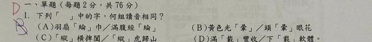

同一個字，不同語境可能不同音

學生答案B
正確答案D
核心錯因把看起來熟的詞直接配對，沒有逐字讀音。
詳細解說
本題問「何組讀音相同」。D 的「滿載豐收」與「下載軟體」中的「載」都讀 ㄗㄞˋ。B 看起來也像同字，但「光暈」的暈讀 ㄩㄣˋ，「頭暈眼花」的暈讀 ㄩㄣ，聲調不同，所以不能選。
一句訂正
遇到多音字要放回詞語判斷：滿載、下載都讀 ㄗㄞˋ；光暈 ㄩㄣˋ，頭暈 ㄩㄣ。
再練一題
下列何組「行」讀音相同？甲：行走 乙：銀行 丙：行列 丁：品行
答案：甲、丙同讀 ㄒㄧㄥˊ；乙讀 ㄏㄤˊ，丁讀 ㄒㄧㄥˋ。判斷時一定要看詞語意思。